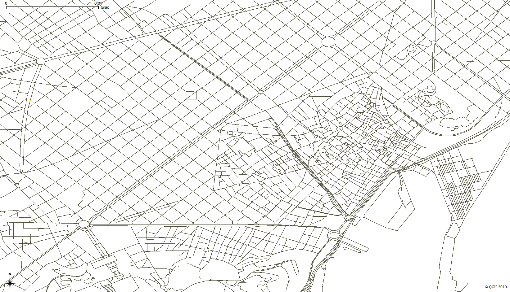

4. Skapa en nätverkstopologi¶
{kind=link}
osm2pgrouting är ett bekvämt verktyg, och dess fokus är att arbeta med OpenStreetMap-data. Det finns flera fall där osm2pgrouting inte kan användas. Vissa nätverksdata levereras redan med en nätverkstopologi som kan användas med pgRouting out-of-the-box. Ofta lagras nätverksdata i Shape-filformat (.shp) och vi kan använda PostGIS ’shp2pgsql-omvandlare för att importera data till en PostgreSQL-databas.
Men vad ska man göra då?
I det här kapitlet lär du dig att skapa en grundläggande Routing Network Topology från nätverksdata som inte har någon routing Topology skapa de minimiattribut som behövs för Routing Network Topology.
4.1. Ladda nätverksdata¶
Först laddar vi OpenStreetMap exempeldata med osm2pgsql.
CITY="DS_TZ"
cd ~/Desktop/workshop
cp ~/data/osm/$CITY.osm.bz2 .
createdb -U user osm_data
psql -U user -d osm_data -c "CREATE EXTENSION postgis;"
psql -U user -d osm_data -c "CREATE EXTENSION pgrouting;"
osm2pgsql -U user -c -d osm_data --latlong --cache 5 --cache-strategy sparse $CITY.osm.bz2
Låt oss se vilka tabeller som har skapats:
Kör: psql -U user -d osm_data -c "\d"
Tabellen som innehåller uppgifter om vägnätet har namnet planet_osm_roads. Den består av en stor mängd attribut.
Kör: psql -U user -d osm_data -c "\d planet_osm_roads"
Det är vanligt att uppgifter om vägnätet innehåller åtminstone följande information:
ID för väglänk (gid)
Vägklass (klass_id)
Längd på väglänk (längd)
Vägens namn (namn)
Väggeometri (the_geom)
Detta gör det möjligt att visa vägnätet som ett PostGIS-lager i GIS-program, till exempel i QGIS. Det är dock inte tillräckligt för routing, eftersom det inte innehåller information om nätverkstopologin.
Nästa steg kommer att använda kommandoradsverktyget PostgreSQL.
psql -U user osm_data
4.2. Skapa en topologi för ett routningsnätverk¶
Att ha dina data importerade till en PostgreSQL-databas kan kräva ytterligare ett steg för pgRouting.
Se till att dina data ger en korrekt Routing Network Topology, som består av information om käll- och målidentifierare för varje väglänk. Resultaten ovan visar att nätverkstopologin inte har någon information om källa och mål.
Skapande av Routing Network Topology är nödvändigt.
Varning
PostGIS-topologin är inte lämplig för Routing.
pgRouting tillhandahåller ett allmänt sätt att skapa Routing Network Topology med funktionen pgr_createTopology.
Denna funktion:
Tilldelar en
källoch enmålidentifiering till varje väglänkDen kan logiskt ”fästa” närliggande hörn inom en viss tolerans genom att tilldela dem samma identifierare.
Skapar en vertices-tabell som är relaterad till den.
Skapar de grundläggande indexen.
pgr_createTopology('<table>', <tolerance>, '<geometry column>', '<gid>')
För ytterligare information se pgr_createTopology.
Lägg först till käll- och målkolumn, kör sedan funktionen pgr_createTopology … och vänta.
Beroende på nätverkets storlek kan denna process ta från några minuter till flera timmar.
Framstegsindikator kan läsas med PostgreSQL NOTICE
Det krävs också tillräckligt med minne (RAM eller SWAP-partition) för att lagra tillfälliga data.
Toleransparameterns dimension beror på din dataprojektion. Vanligtvis är det antingen ”grader” eller ”meter”. I vårt exempel används geometridataprojektionen för att bestämma toleransen:
SELECT find_srid('public','planet_osm_roads','way');
find_srid
-----------
4326
(1 row)
Baserat på detta resultat kommer toleransen att vara 0,00001
-- Add "source" and "target" column
ALTER TABLE planet_osm_roads ADD COLUMN "source" integer;
ALTER TABLE planet_osm_roads ADD COLUMN "target" integer;
-- Run topology function
SELECT pgr_createTopology('planet_osm_roads', 0.00001, 'way', 'osm_id');
4.3. Verifiera topologin för routningsnätverket¶
För att verifiera att det finns en grundläggande Routing Network Topology:
\d planet_osm_roads
Dessutom skapades en ny tabell som innehåller information om topparna:
\d planet_osm_roads_vertices_pgr
idär vertexidentifierarenthe_geomär den geometri som beaktas för den specifika vertexidentifieraren.källaochmålfrånplanet_osm_roadsmotsvarar ettidiplanet_osm_roads_vertices_pgr-tabellenYtterligare kolumner är till för att analysera topologin.
Nu är vi redo för vår första routingfråga med pgr_dijkstra eller någon annan pgRouting-fråga.
4.4. Analysera och justera topologin för routningsnätverket¶
Analysera topologin med pgr_analyzeGraph:
SELECT pgr_analyzeGraph('planet_osm_roads', 0.000001, the_geom := 'way', id := 'osm_id');
Att justera topologin är inte en lätt uppgift:
Är ett isolerat segment ett fel i datan?
Är det ett isolerat segment eftersom det ligger på kanten av den avgränsande rutan?
Beror de potentiella luckor som finns nära återvändsgränder på att toleransen var för liten?
Är korsningarna riktiga korsningar och behöver de nickas till?
Är korsningarna broar eller tunnlar och behöver inte nickas?
Beroende på tillämpning måste vissa justeringar göras.
Vissa funktioner för topologimanipulation <https://docs.pgrouting.org/latest/en/topology-functions.html>`_ hjälper till att upptäcka och åtgärda vissa topologiska fel i data.